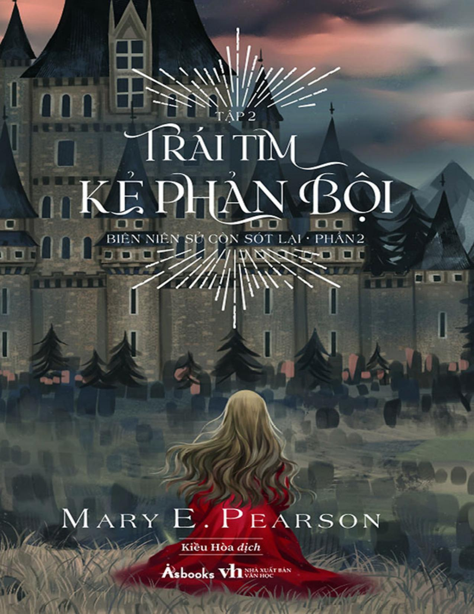

Tập 2

Mary E. Pearson là một tác giả danh tiếng, viết toàn thời gian tại một văn phòng ở California, nơi cô đang sống cùng chồng.
Cô có nhiều đầu sách bán chạy trên New York Times , và một số tác phẩm đã dựng thành phim ăn khách. Trong đó tiêu biểu là bộ truyện Biên niên sử còn sót lại : The Kiss of Deception (Nụ hôn dối lừa), The Heart of Betrayal và The Beauty of Darkness.
Các giải thưởng và danh hiệu cô đã nhận được: Giải Cánh điều vàng, Top 10 Lựa chọn dành cho thanh thiếu niên của YALSA, Sách hay nhất của ALA dành cho giới trẻ, Giải thưởng danh dự của Andre Norton, Giải thưởng sách dành cho giới trẻ ở Nam Carolina và Arkansas, Sách hay nhất dành cho thanh thiếu niên của VOYA,...
❖ ❖ ❖
Nếu ở Phần 1 - Nụ hôn dối lừa , với bối cảnh vùng đất Morrighan trù phú thơ mộng, tác giả kể câu chuyện lãng mạn của nàng công chúa bỏ trốn đến vùng đất bình yên, sống cuộc đời mơ ước và bỏ ngỏ những âm mưu chính trị tàn độc. Thì ở Phần 2 - Trái tim kẻ phản bội, với bối cảnh tàn tích Venda đau thương, cốt truyện đã được đẩy lên cao trào, tuyến nhân vật phát triển bất ngờ, các xung đột trở nên căng thẳng ngộp thở.
Và bạn sẽ cảm thấy ám ảnh để chờ đợi hồi kết.
❖ ❖ ❖

“Thật hiếm khi cuốn sách thứ hai trong một bộ truyện lại hấp dẫn hơn cả cuốn đầu tiên, nhưng trường hợp đó xảy ra ở bộ truyện này.”
– Tạp chí Booklist
“Phần truyện cao trào tiếp theo gây đau tim mà người hâm mộ truyện giả tưởng sẽ hoàn toàn mong đợi.”
– Tạp chí School Library
❖ ❖ ❖
“Có bảy ngôi sao sa xuống từ trời cao.
Một làm rung chuyển núi đồi,
Một khuấy động biển cả,
Một bóp nghẹt bầu không khí,
Và bốn còn lại để thử thách trái tim con người.”